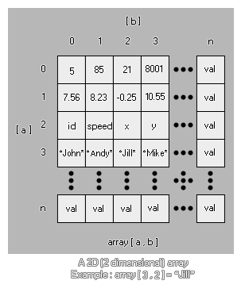

Arrays mögen auf den ersten Blick verwirrend erscheinen, aber sie können sehr nützlich sein und sind ein wesentlicher Bestandteil beim Erstellen von Spielen. Warum? Nun, hier sind nur ein paar Dinge, die ohne Arrays nicht möglich wären -
- Menüs. Ein oder zwei Arrays können die Erstellung eines guten Menüsystems erheblich erleichtern.
- RPGs. Arrays sind essentiell für die Erstellung von RPGs, denn anstatt ein Chaos aus Variablen zu haben, haben Sie nur ein paar Zeilen, auf die Sie jederzeit zurückgreifen können.
- Kartenspiele. Gut, um Karten und Hände im Auge zu behalten und sogar gemischt zu werden!
- Highscores und andere Statistiken. Viel einfacher, ein Array als mehrere Variablen zu verfolgen.
Das ist nur die Spitze des Eisbergs, denn Arrays sind eines der grundlegendsten und nützlichsten Programmierwerkzeuge, die Sie verwenden können, und Sie wären überrascht, welche Anwendungen sie haben können! Für die Verwendung in GML stehen verschiedene Array-Typen zur Verfügung, die in den folgenden Abschnitten beschrieben werden:
Okay, wir können ein Array für die oben genannten Dinge verwenden, aber was ist ein Array? Wie sieht es aus? Nun, so etwas...
array[0] = 1.25;
Dies ist ein 1D (eindimensionales) Array, in dem wir nun die einzelnen Teile aufteilen werden, um zu sehen, was es bedeutet:
array
Dies ist der Name des Arrays. Genau wie jede andere Variable kann es von "a" bis "mymumscow" alles sein, was Sie wollen.
[0]
Dies ist die Position innerhalb des Arrays, die wir prüfen oder ändern. Sie sehen, ein Array ist im Grunde ein Container mit einer Anzahl von Leerzeichen zum Speichern von Werten, und jede Position im Container hat eine spezifische Nummer, um sie zu identifizieren, was wir in [] setzen. Es ist erwähnenswert, dass ein Array immer bei 0 beginnt und niemals negativ sein kann! Jetzt erweitern wir unser Array um verschiedene Positionen...
array[2] = 0;
array[1] = 0;
array[0] = 0;Unser Array enthält jetzt drei Positionen (0, 1 und 2) und wir haben unser Array auf 0 initialisiert. Was bedeutet das? Nun, ein Array muss initialisiert werden, bevor wir es benutzen können oder GameMaker Studio 2 gibt uns einen Fehler. Das Initialisieren eines Arrays bedeutet nur, dass wir jeder Position des Arrays einen Anfangswert geben, um es an anderer Stelle im Objekt oder Code zu verwenden. Dies ist wichtig, um sich daran zu erinnern, da es bedeutet, dass Sie vor der Verwendung von Arrays eine gewisse Planung durchführen müssen, aber es ist einfach genug, eine solche Schleife mit einer Wiederholungsschleife wie dieser zu initialisieren...
var i = 9;
repeat(10)
{
array[i] = 0;
i -= 1;
}Dieser einfache Code initialisiert ein Array mit zehn Positionen (0-9) auf 0, wobei jede Position im Array den Wert 0 enthält. Sie werden feststellen, dass das Array rückwärts initialisiert wurde, wobei der letzte Wert zuerst definiert wird. Dies ist nicht unbedingt notwendig, aber es ist der optimale Weg, dies zu tun, da es einen Speicherplatz im Speicher reserviert, der die genaue Größe des Arrays hat. Wenn Sie dagegen ein Array von 0 aufwärts initialisieren, muss der Speicher für jeden neu zugewiesen werden zusätzlicher Mehrwert Der Geschwindigkeitsunterschied ist für kleinere Arrays vernachlässigbar, aber größere sollten auf diese Weise so weit wie möglich optimiert werden.
Was aber, wenn wir das Array mit verschiedenen Werten für jede Position initialisieren wollen? Dafür müssen wir jede Position manuell eingeben, aber es gibt einen netten Trick, der uns hilft, die Dinge auch dort zu verfolgen!
count = 3;
array[count] = "you?"
count -= 1;
array[count] = "are "
count -= 1;
array[count] = "How "
count -= 1;
array[count] = "Hello!"
count -= 1;Wie Sie sehen können, haben wir im Array keine Zahlen verwendet, sondern eine Variable, um durch die Werte zu zählen. Dies hat zwei Vorteile: Erstens müssen wir uns keine Gedanken über Tippfehler oder Fehler beim Schreiben der Array-Positionen machen, und zweitens haben wir in der Variablen "count" die Anzahl der Positionen, die das Array enthält, die dann verwendet werden können anderswo im Objekt. Sehr hilfreich!
Schließlich können Sie die Werte einem Array zuweisen, indem Sie einen einzelnen Variablenaufruf verwenden:
var a = [0, 1, 2, 3, 4];
var b = [];Das Obige erstellt zwei Arrays als lokale Variablen, die erste bereits mit 5 Elementen und die zweite als leeres Array, das bereit ist, Werte hinzuzufügen.
Wie benutzen wir ein Array für praktische Dinge? Genauso wie wir eine normale Variable verwenden würden, wie die folgenden Beispiele zeigen:
total = array[0] + array[5]; //Add two array values together
if (array[9]) == 10 //Check an array value
{
//do something
}
draw_text(32, 32, array[3]); //draw an array valueDa Arrays fortlaufend nummeriert sind, bedeutet dies, dass Sie sie auch durchlaufen können, um zusätzliche Aktionen auszuführen, wie wir sie initialisiert haben:
var total = 0;
for (var i = 0; i < 10; i++;)
{
total += array[i];
draw_text(32, 32 + (i * 32), array[i]);
}
draw_text(32, 32 + (i * 32), total);Der obige Code addiert alle Werte in unserem Array, zeichnet jeden von ihnen und zeichnet den Gesamtwert am Ende.
Nun, da wir wissen, wie ein normales Array aussieht, schauen wir uns ein zweidimensionales (zweidimensionales) Array an. 
array[0, 0] = 5;
Wie zuvor zeigt jede Zahl auf eine Position innerhalb der Anordnung, nur dass diesmal jede Position eine "a" - und eine "b" -Koordinate aufweist. Stellen Sie es sich als eine zusätzliche Dimension unseres Containers vor, da es jetzt Höhe und Breite hat, während das 1D Array nur Höhe hat. Hier ist ein erweitertes Beispiel:
array[1, 2] = 1;
array[1, 1] = "hello";
array[1, 0] = 55.5;
array[0, 2] = sprite_index;
array[0, 1] = "world";
array[0, 0] = -67.89;Ein 2D-Array muss vor der Verwendung wie ein 1D-Array initialisiert werden und kann wie jede andere Variable reelle Zahlen, Strings und Konstanten enthalten. Dies macht es zu idealen Kandidaten für jedes Spiel, in dem große Datenmengen gespeichert werden müssen leicht zugänglich (denken Sie daran, Sie können ein Array leicht durchlaufen). Hier ist ein letztes Beispiel, wie dies in einem aktuellen Spiel verwendet werden kann... Angenommen, Sie möchten vier verschiedene Gegner an vier verschiedenen Punkten in Ihrem Spiel spawnen, abhängig von einem zufälligen Wert. Nun, wir können ein 2D-Array verwenden, um dies zu tun und das Schreiben einer Menge Code zu sparen.
Zuerst sollten wir das Array initialisieren, das wir im create-Event unseres "controller" -Objekts verwenden werden (beachten Sie die Verwendung von Kommentaren, um Sie daran zu erinnern, was jeder Array-Eintrag tut):
enemy[3, 2] = 448; //y position
enemy[3, 1] = 32; //x position
enemy[3, 0] = obj_Slime; //Object
enemy[2, 2] = 448;
enemy[2, 1] = 608;
enemy[2, 0] = obj_Skeleton;
enemy[1, 2] = 32;
enemy[1, 1] = 608;
enemy[1, 0] = obj_Knight;
enemy[0, 2] = 32;
enemy[0, 1] = 32;
enemy[0, 0] = obj_Ogre;Wir haben jetzt die Objekte, um Instanzen von und ihre entsprechenden x- und y-Spawn-Koordinaten innerhalb des Raums zu spawnen, die alle in unserem Array gespeichert sind. Dies kann nun wie folgt in einem anderen Ereignis des Controller-Objekts verwendet werden (z. B. ein Alarm oder ein Tastendruckereignis):
var i;
i = irandom(3); //get a random number from 0 to 3, inclusive
instance_create_layer(enemy[i, 1], enemy[i, 2], enemy[i, 0], "Enemy_Layer"); //Use the array to create the objectDieser kurze Code wird nun einen zufälligen Gegner im Spielraum hervorbringen, und er benutzt weit weniger Code als eine "if / then / else" -Struktur oder sogar einen "switch", und da das Array alle zusammen in dem create-Ereignis initialisiert wird ist viel einfacher zu bearbeiten und ändern Sie alle diese Werte, da sie nicht fest in den Rest der Objektcodes codiert sind. Es ist auch erwähnenswert, dass die Länge jedes 2D-Arrays unterschiedlich sein kann, so dass Sie ein Array mit einer Höhe von 2 haben können, aber Eintrag 0 könnte 2 lang sein, Eintrag 1 könnte 4 sein und Eintrag 2 könnte 3 sein in Länge:
array[0, 0] = 1;
array[0, 1] = 2;
array[1, 0] = "one";
array[1, 1] = "two";
array[1, 2] = "three";
array[1, 3] = "four";
array[2, 0] = "1";
array[2, 1] = "2";
array[2, 2] = "3";
Genau wie bei normalen Variablen können Sie Arrays an Skripts übergeben, die verwendet werden sollen, und dann an die Instanz zurückgeben, die das Skript aufgerufen hat. Dazu müssen Sie lediglich die Array-Variable angeben (weder die einzelnen Einträge noch die Klammern []), und das Array wird als Referenz an das Skript übergeben. Wenn Sie jedoch einen der Array-Werte ändern, wird das Array nur für das Skript in ein temporäres Array kopiert. Beachten Sie die Verwendung des Wortes vorübergehend hier! Sie übergeben das Array selbst nicht wie eine Variable an das Skript, sondern Sie fordern stattdessen an, dass das Skript eine Kopie dieses Arrays erstellt, die Sie im Skript ändern. Dies bedeutet, dass Sie das Array immer aus dem Skript zurückgeben müssen, wenn Sie Array-Werte ändern möchten.
HINWEIS: Aufgrund der internen Funktionsweise kann das Übergeben von Arrays an Skripts die Leistung beeinträchtigen, insbesondere wenn das Array sehr groß ist. Also benutze diese Funktionalität mit Vorsicht!Betrachten Sie als Beispiel den folgenden Code. Zuerst erstellen wir das Array, das wir verwenden möchten, und dann übergeben wir dieses Array an das Skript:
for (var i = 9; i > -1; i--;)
{
a[i] = i;
}
scr_Return_Array(a);Das Skript selbst ist etwas einfaches wie:
for (var i = 9; i > -1; i--;)
{
a[i] = i * 100;
}Nun würden Sie das letzte Array erwarten die Werte 900, 800, 700, etc. zu halten... aber das wird nicht der Fall sein, da wir nicht das Array aus dem Skript zurückgekommen, so alles, was wir war die temporäre Kopie geändert, die war erstellt, wenn wir das Array als Argument in das Skript übergeben haben. Um dies zu korrigieren, hätten wir den Code wie folgt formatieren müssen:
for (var i = 9; i > -1; i--;)
{
a[i] = i;
}
a = scr_Return_Array(a);Und das Skript sollte jetzt so aussehen:
for (var i = 9; i > -1; i--;)
{
argument0[i] = i * 100;
}
return argument0;Hinweis: das obige ist nicht erforderlich, wenn Sie keine der Array-Werte ändern, sondern einfach auf sie verweisen. Wenn Sie auf ein Array verweisen, wird es nicht kopiert und kann schneller analysiert werden.Sie können ein Array auch einfach löschen, indem Sie die Variable, die es definiert, auf einen einzelnen Wert "neu zuweisen". Dadurch wird der Speicher freigegeben, der allen Einträgen und Werten für dieses Array zugeordnet ist. Beispielsweise:
//Create the array for (var i = 9; i > -1; i--;)
{
a[i] = i;
}
//Delete the array a = 0;Es ist auch erwähnenswert, dass Sie den Accessor verwenden können @ um ein Array aus einem Skript zu referenzieren und seine Werte direkt zu ändern, was den CPU-Overhead beim Kopieren in das Skript spart. Auf der folgenden Seite finden Sie weitere Informationen zu Accessoren und ihrer Funktionsweise sowie ein Beispiel für Arrays:

Array-Funktionen
Es gibt ein paar Funktionen, die mit der Verwendung von Arrays verbunden sind. Diese wurden entwickelt, um Ihnen Flexibilität in Ihrem Code zu geben und Ihnen zu ermöglichen, mehr funktionale und dynamische Arrays zu erstellen, wenn Sie Ihre Spiele erstellen. Diese Funktionen sind: